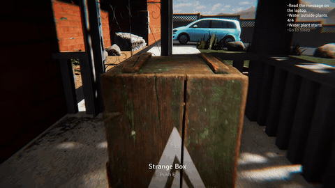
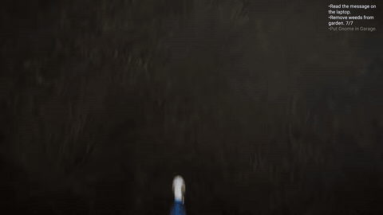
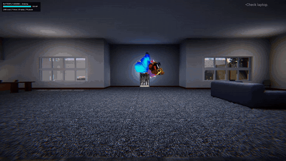
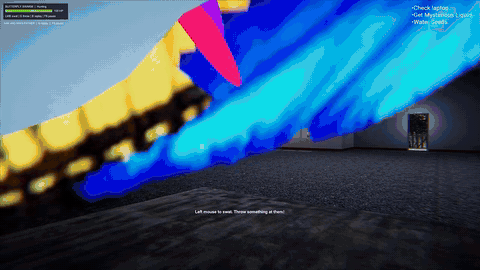

Gnome review: house-sitting horror with a garden gnome problem

Gnome is an indie horror game from echomune. You're looking after a friend's house: water the garden, pull weeds, do the chores, through both day and night. Then a garden gnome named Darry starts showing up without warning. The store page promises an eerie atmosphere, scares and a mystery you piece together as the days go on, and it wants you to play at night with the sound up.
Here's how my house-sitting job went. My first plan for Darry was a gnome smoothie. I got rid of him like a normal person instead, and somehow ended up in Nevada. Then the giant butterflies showed up. I have a real fear of butterflies, so I fed them butter burgers. Sam from next door came over to say hi, her sister Mia came looking for her, and their dad Frank came looking for both of them. Frank, I don't know where your daughters are. I just came over to do some house sitting. It all ends at a baby shower with the Butterfly Queen, and I'm the gnome now.




Gnome is $7.99 on Steam. The full video is below.